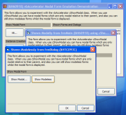

VB5 Emulated Modality Demonstration (16K)
VB5 Emulated Modality Demonstration (16K)
 VB6 Emulated Modality Demonstration (15K)
VB6 Emulated Modality Demonstration (15K)
 1 Nov 2003
1 Nov 2003
First Posted
 Subclassing Without The Crashes
Subclassing Without The Crashes
 vbAccelerator Drop-Down and Popup Form Control
vbAccelerator Drop-Down and Popup Form Control
 vbAccelerator Office Docking Bar Control
vbAccelerator Office Docking Bar Control

Emulating Modal Forms
Demonstrates how to show non-modal forms and have them behave as if they were shown modally.
Sometimes, the restrictions applied when showing a modal form can be restrictive. For example, if your application can have more than one main view window, a modal dialog prevents any other form from being activated whilst the modal dialog is displayed. Another example occurs when you want to try and show a Drop-Down Form or a floating toolbar from an otherwise modal form. This article demonstrates how to emulate showing a modal form and fix these limitations.
About Modal Forms
Fundamentally there is really only one difference in showing a modal form compared to
a non-modal one. When you show a modal form, other forms in the application are disabled
(set to VB .Enabled = false). This prevents you from clicking on the other
forms and when you switch to the application by Alt-Tabbing or clicking on it the modal
form is brought to the front. This means that there is a fairly simple path in VB code
to emulate a modal form. There are two other aspects to the behaviour that need to be
considered:
- When the modal form is dismissed, you want the parent form to regain focus. If it is still disabled when this occurs, then the parent form won't get the focus back.
- Using the Show method from VB stops further code from running until the modal dialog has closed.
Resolving the first issue means you need to disable the main form prior to showing the dialog, detect when the dialog is closing and then re-enable the main form. To a degree this can be done using VB events, however, note the the Unload event fires to late to re-enable the main form. For this reason, you can use a subclass on the dialog to detect the WM_SHOWWINDOW message which is sent to it prior to the Window being destroyed.
The second issue can easily be emulated by running a loop which simply calls DoEvents whilst the dialog is shown modally. This isn't the most efficient method but realisitically isn't going to be much of a drain on CPU.
Putting these techniques together allows us to create a class which manages showing a modal dialog using emulated techniques.
About the cShowModal class
The aim of the cShowModal class is to make the transition from using VB's Show vbModal to the new technique as straightforward as possible. Where in VB code you write:
' Create dialog Dim f As New frmDialog ' Show modally f.Show vbModal, Me ' f has now closed, do further processing
With the emulated version you just need to create a new instance of the class and use that rather than the Show method:
' Create dialog Dim f As New frmDialog ' Create emulated modal manager class: Dim c As New cShowModal ' Show Modally: c.ShowModal f, Me ' f has now closed, do further processing:
If you try the demonstration project, you will see that you can either try showing the dialog using VB's standard methods, or using the emulated class. When you use the emulated class, you can start doing things that VB doesn't let you do, such as having two independent main windows which have their own independent modal dialogs, and showing modeless dialogs from modal dialogs.
Conclusion
This article demonstrates how to wrap showing a VB form modelessly and have it behave as if it were a modal form. The technique is not frequently needed, but it can be invaluable when creating sophisticated UIs that use floating and drop-down forms.